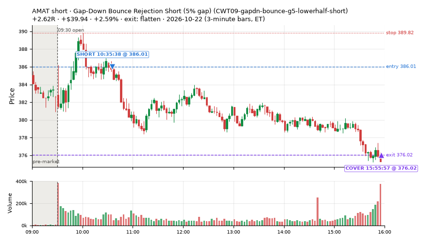
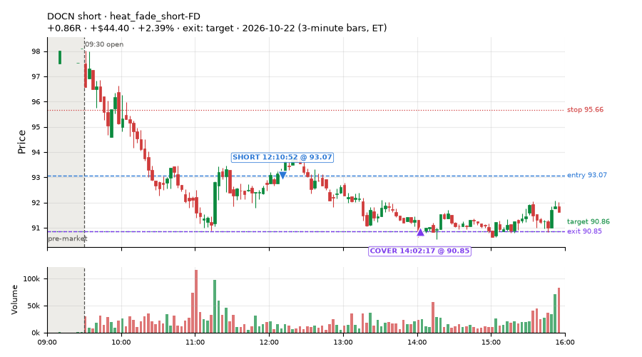
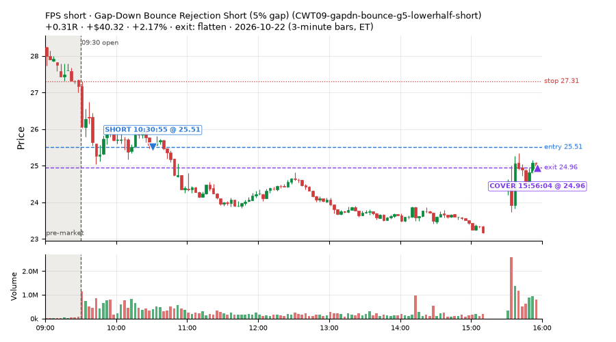
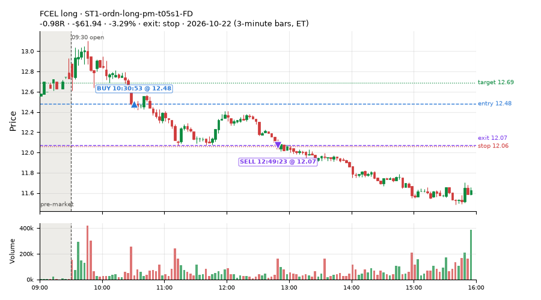
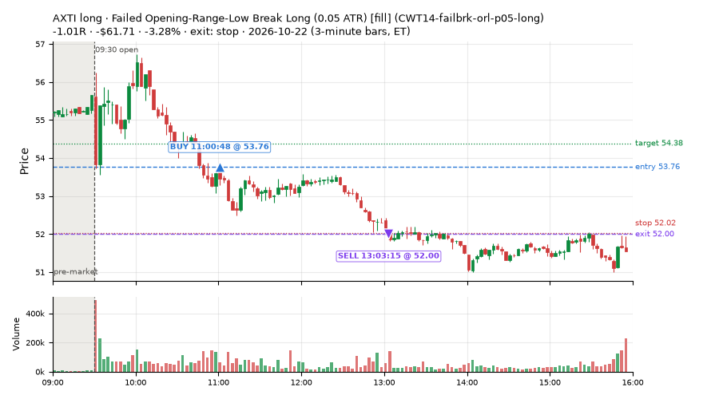
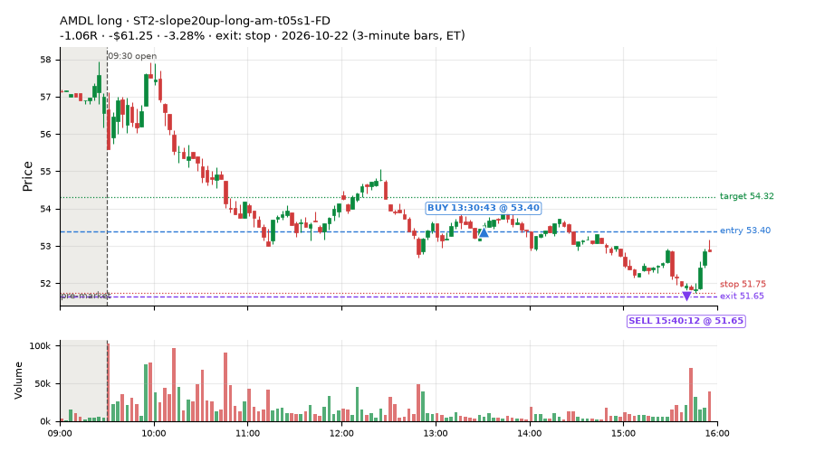
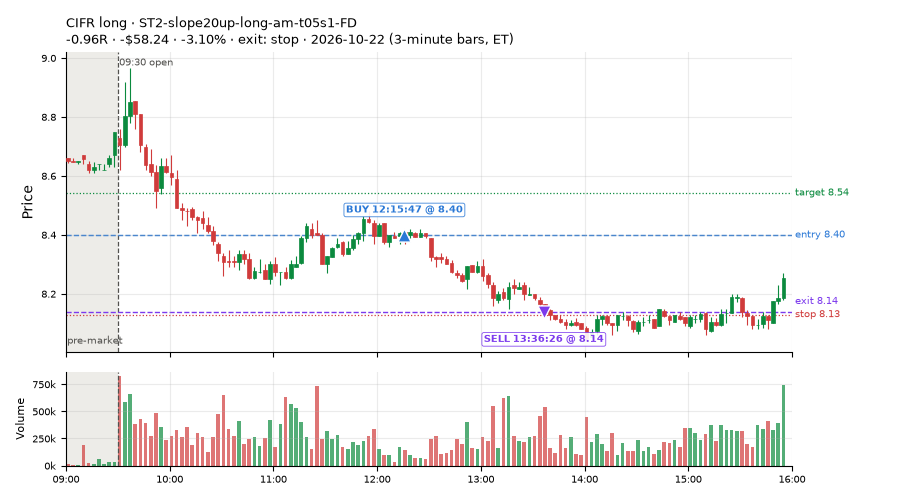
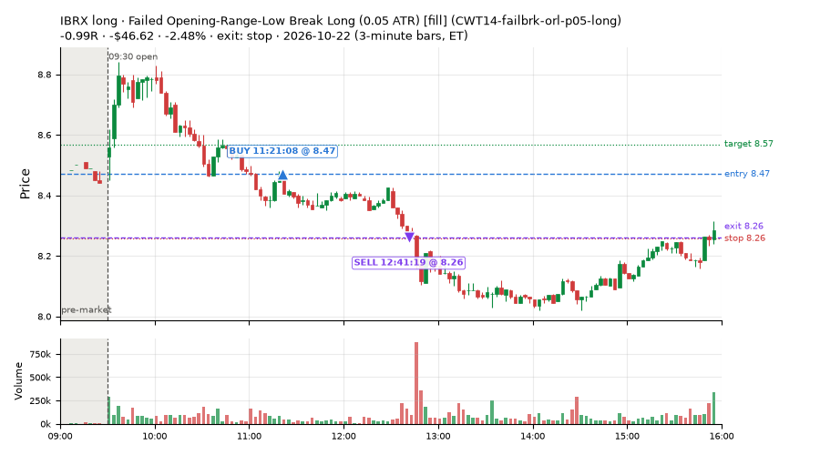

281 trades · win rate 46% · P/L $-1,217.73
PROBATION: no live setup has passed both locked test periods. 10 owner-directed setups added 2026-10-08 (MarcoFlow top 5 + 5 new), untested live. RW6G1 (RW6 + VWAP band guard) added 2026-10-09, probation.

| Symbol | Setup | Side | In | Out | Entry | Exit | Exit reason | % gained | P/L |
|---|---|---|---|---|---|---|---|---|---|
| AMAT | Gap-Down Bounce Rejection Short (5% gap) (CWT09-gapdn-bounce-g5-lowerhalf-short) | short | 10:35 | 15:55 | 386.01 | 376.02 | flatten | +2.59% | $39.94 |
| DOCN | heat_fade_short-FD | short | 12:10 | 14:02 | 93.07 | 90.85 | target | +2.39% | $44.40 |
| FPS | Gap-Down Bounce Rejection Short (5% gap) (CWT09-gapdn-bounce-g5-lowerhalf-short) | short | 10:30 | 15:56 | 25.51 | 24.96 | flatten | +2.17% | $40.32 |
| Symbol | Setup | Side | In | Out | Entry | Exit | Exit reason | % lost | P/L |
|---|---|---|---|---|---|---|---|---|---|
| FCEL | ST1-ordn-long-pm-t05s1-FD | long | 10:30 | 12:49 | 12.48 | 12.07 | stop | -3.29% | $-61.94 |
| AXTI | CWT14-failbrk-orl-p05-long | long | 11:00 | 13:03 | 53.76 | 52.00 | stop | -3.28% | $-61.71 |
| AMDL | ST2-slope20up-long-am-t05s1-FD | long | 13:30 | 15:40 | 53.40 | 51.65 | stop | -3.28% | $-61.25 |
| CIFR | ST2-slope20up-long-am-t05s1-FD | long | 12:15 | 13:36 | 8.40 | 8.14 | stop | -3.10% | $-58.24 |
| IBRX | CWT14-failbrk-orl-p05-long | long | 11:21 | 12:41 | 8.47 | 8.26 | stop | -2.48% | $-46.62 |








Signal to fill: median 2s, 90th percentile 3s (280 trades). Bars close each minute; the order follows the bar close.
Best excursion (MFE): median 0.40R; worst (MAE) median 0.90R. 36% of trades never got +0.25R in our favour; 7 reached +1R and still closed at or below 0.
| Symbol | Setup | Best R | Worst R | Closed R |
|---|---|---|---|---|
| PEG | MF1-945-flowsell-vwapup-FD | +2.22 | -1.22 | -1.11 |
| BMNR | CWT09-gapdn-bounce-g5-lowerhalf-short | +3.44 | -0.81 | +1.11 |
| XHB | NS2-sma50break-overbought-short-FD | +1.04 | -1.20 | -1.22 |
| TTD | RW2-exhaustion-noon-adv150-short-FD | +1.13 | -1.04 | -1.04 |
| COST | heat_fade_short | +1.07 | -1.09 | -1.07 |
| Entry time | Trades | Win | Avg R | P/L |
|---|---|---|---|---|
| 09:50-10:30 | 90 | 49% | -0.32 | $-257.22 |
| 10:30-11:30 | 109 | 39% | -0.38 | $-870.34 |
| 11:30-13:00 | 57 | 53% | +0.06 | $-10.77 |
| 13:00-14:00 | 11 | 27% | -0.52 | $-132.90 |
| 14:00-16:00 | 14 | 64% | +0.17 | $53.50 |
| Setup | Trades | Win | Avg R | Adj R (net of SPY) | P/L |
|---|---|---|---|---|---|
| Gap-Down Bounce Rejection Short (5% gap) (CWT09-gapdn-bounce-g5-lowerhalf-short) | 11.0 | 55% | +0.04 | +0.14 | $70.24 |
| Failed Opening-Range-Low Break Long (0.05 ATR) [fill] (CWT14-failbrk-orl-p05-long) | 65.0 | 54% | -0.24 | -0.17 | $-596.10 |
| Failed Opening-Range-Low Break Long (0.05 ATR, low volume) [fill] (CWT14-failbrk-orl-p05-lowvol-long) | 18.0 | 56% | -0.24 | +0.09 | $-11.46 |
| Failed Opening-Range-Low Break Long (0.1 ATR) [fill] (CWT14-failbrk-orl-p10-long) | 9.0 | 22% | -0.72 | -0.18 | $-53.27 |
| Failed Opening-Range-Low Break Long (low volume) (CWT14-failbrk-orl-p10-lowvol-long) | 7.0 | 29% | -0.64 | -0.12 | $-34.27 |
| Failed Prior-Day-High Break Short (0.05 ATR, low volume) [fill] (CWT14-failbrk-pdh-p05-lowvol-short) | 13.0 | 62% | -0.17 | -0.53 | $-17.28 |
| Failed Prior-Day-High Break Short (low volume) (CWT14-failbrk-pdh-p10-lowvol-short) | 14.0 | 64% | -0.16 | -0.44 | $-17.44 |
| Opening-Range Low Sweep Reversal (LIQ-orl-sweep-open15-s25-long) | 17.0 | 18% | -0.58 | -0.65 | $-251.84 |
| MF1-945-flowsell-vwapup-FD | 5.0 | 40% | +0.12 | +0.12 | $27.15 |
| Big Gainer Average Reclaim Fade (NS2-sma50break-overbought-short) owner-directed; holdouts once: Sep-Oct -0.115R n76, Apr-Jun +0.021R n587 | 4.0 | 50% | +0.00 | -0.10 | $1.26 |
| NS2-sma50break-overbought-short-FD | 7.0 | 29% | -0.60 | -0.79 | $-51.79 |
| RW2-exhaustion-noon-adv150-short-FD | 23.0 | 9% | -0.88 | -0.83 | $-255.93 |
| RW6-ns2-up3-short-FD | 5.0 | 20% | -0.52 | -0.51 | $-27.85 |
| ST1-ordn-long-pm-t05s1-FD | 2.0 | 50% | -0.42 | -0.48 | $-58.71 |
| ST2-slope20up-long-am-t05s1-FD | 23.0 | 57% | -0.02 | +0.02 | $-109.29 |
| Midday Gap-Up Dip Buy (heat_fade_long) failed Apr-Jun holdout: -0.138R/trade over 1043 trades | 3.0 | 100% | +1.28 | +1.04 | $41.23 |
| heat_fade_long-FD | 3.0 | 0% | -1.13 | -1.35 | $-48.61 |
| Morning Bounce Fade (heat_fade_short) failed Apr-Jun holdout: -0.015R/trade over 1420 trades | 5.0 | 20% | -0.82 | -1.26 | $-54.04 |
| heat_fade_short-FD | 47.0 | 57% | +0.14 | -0.04 | $230.27 |
Market direction (SPY, beta 1) accounted for $-53.39 of today's $-1,217.73; the rest ($-1,164.34) came from the setups themselves. Avg R net of SPY: -0.25 (incl. a hedge leg's cost; report only).
19 setups live today. Today: 710 signals, 281 taken, 36 lost because another setup held the symbol (5%). Since 2026-10-21 (2 sessions): 1424 signals, 628 taken, 85 lost to other setups (6%). Peak open positions today 85 of 200 slots. Earnings blackout removed 733 symbols before scanning.
Simulated playing time (not live): 796 what-if trades of signals not taken, avg -0.02R, 60% winners; of them 85 lost to another setup (avg -0.22R).
Crowded out: NS2-sma50break-overbought-short
| Prio | Setup | Today sig / taken | Sessions | Signals / taken / trades | Taken/day | Expected/day | Lost to other setups | Lost to (setup n) | Top skip reasons | SIMULATED: not-taken n / avg R / win | Verdict |
|---|---|---|---|---|---|---|---|---|---|---|---|
| 1 | ST1-ordn-long-pm-t05s1-FD ST1-ordn-long-pm-t05s1-FD | 3 / 2 | 2 | 5 / 3 / 3 | 1.50 | 3.49 | 0 | – | spread / quote / size 1, broker rejected 1 | 2 / -0.20R / 50% | slow 7.5 entries/week; ~8 weeks to 60 trades |
| 2 | RW6-ns2-up3-short-FD RW6-ns2-up3-short-FD | 9 / 5 | 2 | 11 / 6 / 6 | 3.00 | 7.12 | 0 | – | daily loss cap 2, spread / quote / size 2, not shortable / shorts off 1 | 5 / +0.05R / 60% | ok 15.0 entries/week |
| 3 | NS2-sma50break-overbought-short-FD NS2-sma50break-overbought-short-FD | 19 / 7 | 2 | 24 / 11 / 11 | 5.50 | 17.08 | 0 | – | daily loss cap 8, spread / quote / size 3, not shortable / shorts off 2 | 13 / +0.24R / 62% | ok 27.5 entries/week |
| 4 | Big Gainer Average Reclaim Fade NS2-sma50break-overbought-short | 15 / 4 | 2 | 16 / 4 / 4 | 2.00 | 5.74 | 8 | NS2-sma50break-overbought-short-FD 8, RW6-ns2-up3-short-FD 1 | symbol held by another setup 8, spread / quote / size 3, not shortable / shorts off 1 | 12 / +0.07R / 58% | crowded-out 8 of 16 signals (50%) lost to setups already holding the symbol |
| 5 | MF1-945-flowsell-vwapup-FD MF1-945-flowsell-vwapup-FD | 12 / 5 | 2 | 20 / 11 / 11 | 5.50 | 23.94 | 0 | – | spread / quote / size 7, not shortable / shorts off 2 | 9 / -0.41R / 33% | watch 5.50 entries/day vs ~23.94 expected |
| 6 | ST2-slope20up-long-am-t05s1-FD ST2-slope20up-long-am-t05s1-FD | 31 / 23 | 2 | 42 / 31 / 31 | 15.50 | 24.03 | 6 | heat_fade_short-FD 5, heat_fade_short 1 | symbol held by another setup 6, spread / quote / size 5 | 11 / -0.31R / 36% | ok 77.5 entries/week |
| 7 | Midday Gap-Up Dip Buy heat_fade_long | 5 / 3 | 2 | 9 / 6 / 6 | 3.00 | 30.36 | 1 | heat_fade_long-FD 1 | spread / quote / size 2, symbol held by another setup 1 | 3 / +0.22R / 67% | watch 3.00 entries/day vs ~30.36 expected |
| 8 | Opening-Range Low Sweep Reversal LIQ-orl-sweep-open15-s25-long | 20 / 17 | 2 | 41 / 34 / 34 | 17.00 | – | 3 | CWT14-failbrk-orl-p10-lowvol-long 3, CWT14-failbrk-orl-p10-long 3, CWT14-failbrk-orl-p05-lowvol-long 3 | symbol held by another setup 3, daily loss cap 2, spread / quote / size 2 | 7 / +0.05R / 57% | ok 85.0 entries/week |
| 9 | RW2-exhaustion-noon-adv150-short-FD RW2-exhaustion-noon-adv150-short-FD | 50 / 23 | 2 | 90 / 31 / 31 | 15.50 | 50.34 | 0 | – | daily loss cap 40, not shortable / shorts off 14, spread / quote / size 5 | 59 / -0.18R / 44% | ok 77.5 entries/week |
| 10 | heat_fade_long-FD heat_fade_long-FD | 12 / 3 | 2 | 24 / 10 / 10 | 5.00 | 51.74 | 3 | heat_fade_long 3, ST1-ordn-long-pm-t05s1-FD 1 | spread / quote / size 6, daily loss cap 5, symbol held by another setup 3 | 14 / +0.61R / 86% | watch 5.00 entries/day vs ~51.74 expected |
| 11 | Failed Opening-Range-Low Break Long (low volume) CWT14-failbrk-orl-p10-lowvol-long | 42 / 7 | 2 | 109 / 52 / 52 | 26.00 | – | 1 | CWT14-failbrk-orl-p10-long 1, CWT14-failbrk-orl-p05-long 1, LIQ-orl-sweep-open15-s25-long 1 | daily loss cap 35, per-setup cap 16, spread / quote / size 5 | 57 / +0.01R / 68% | ok 130.0 entries/week |
| 12 | Failed Opening-Range-Low Break Long (0.1 ATR) [fill] CWT14-failbrk-orl-p10-long | 58 / 9 | 2 | 141 / 58 / 58 | 29.00 | – | 1 | CWT14-failbrk-orl-p05-lowvol-long 1, CWT14-failbrk-orl-p05-long 1, CWT14-failbrk-orl-p10-lowvol-long 1 | daily loss cap 46, per-setup cap 31, spread / quote / size 5 | 83 / -0.06R / 65% | ok 145.0 entries/week |
| 13 | Morning Bounce Fade heat_fade_short | 9 / 5 | 2 | 44 / 25 / 25 | 12.50 | 31.76 | 0 | – | spread / quote / size 17, not shortable / shorts off 2 | 19 / -0.15R / 37% | ok 62.5 entries/week |
| 14 | Failed Opening-Range-Low Break Long (0.05 ATR, low volume) [fill] CWT14-failbrk-orl-p05-lowvol-long | 85 / 18 | 2 | 219 / 92 / 92 | 46.00 | – | 0 | – | daily loss cap 64, per-setup cap 54, spread / quote / size 9 | 127 / -0.07R / 66% | ok 230.0 entries/week |
| 15 | heat_fade_short-FD heat_fade_short-FD | 91 / 47 | 2 | 191 / 72 / 72 | 36.00 | 173.78 | 34 | heat_fade_short 25, CWT14-failbrk-orl-p05-long 3, LIQ-orl-sweep-open15-s25-long 3 | symbol held by another setup 34, daily loss cap 34, spread / quote / size 26 | 119 / +0.11R / 52% | watch 36.00 entries/day vs ~173.78 expected |
| 16 | Failed Opening-Range-Low Break Long (0.05 ATR) [fill] CWT14-failbrk-orl-p05-long | 129 / 65 | 2 | 305 / 144 / 144 | 72.00 | – | 28 | CWT14-failbrk-orl-p10-lowvol-long 21, CWT14-failbrk-orl-p10-long 21, CWT14-failbrk-orl-p05-lowvol-long 21 | per-setup cap 82, spread / quote / size 34, symbol held by another setup 28 | 161 / -0.11R / 62% | ok 360.0 entries/week |
| 17 | Gap-Down Bounce Rejection Short (5% gap) CWT09-gapdn-bounce-g5-lowerhalf-short | 43 / 11 | 2 | 56 / 11 / 11 | 5.50 | – | 0 | – | not shortable / shorts off 32, daily loss cap 11, spread / quote / size 2 | 45 / +0.42R / 71% | ok 27.5 entries/week |
| 18 | Failed Prior-Day-High Break Short (0.05 ATR, low volume) [fill] CWT14-failbrk-pdh-p05-lowvol-short | 51 / 13 | 1 | 51 / 13 / 13 | 13.00 | – | 0 | – | daily loss cap 29, spread / quote / size 8, not shortable / shorts off 1 | 38 / -0.16R / 60% | ok 65.0 entries/week |
| 19 | Failed Prior-Day-High Break Short (low volume) CWT14-failbrk-pdh-p10-lowvol-short | 26 / 14 | 1 | 26 / 14 / 14 | 14.00 | – | 0 | – | spread / quote / size 9, daily loss cap 2, not shortable / shorts off 1 | 12 / -0.24R / 58% | ok 70.0 entries/week |
Every trade is attached as a CSV you can open and edit in Excel or Google Sheets. Live page: https://misiti15.github.io/MCF/live/